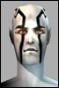

Psilex
Soleet
 Registered: Feb 2002
Posts: 170 |  Doom lag and the shamefull screens of AO Doom lag and the shamefull screens of AOLet me start with congradulations of a really really good game. It definitely has a high addiction rating. But it's not perfect of course. In your strive to balance proffesions, versus monsters, each other, missions, etc...there are some things that have just continually been overlooked that would make the game so much better. One of the things I really hate is the reporting of damage. My main being an agent, I take damage very seriously and have many times scrolled back up and added the damage reported only to find that I shouldn't be dead....at least yet...and that if I wasn't dead, maybe I could have gotten that last shot off, since the monster only had a tad left anyway.
That's a problem, but not the only. Why have you guys just ignored your disconnect screen? It shames you to have "error - there is a problem witht he server - you have been disconnected" every time someone logs. You could at least just say "You have been disconnected," which would still be 100% correct, crash or not.
The thing that bothers me the most tho, is battle lag. I'm not talking about being in a team and it lags when there's a ton going on. I can understand that. But there is definitely something going on that isn't right sometimes. A prime example is last night, I was messing around in PM killing sharks in the river. It was a tricky business as you had to sit in the water to get xp and when you are in the water, the shark turns around to get you. Well, the game would continually lag when the shark would come back for me. I had to really watch it as suddenly instead of it being 15 feet away, it was on top of me hitting me for 250+ damage. This isn't the only time I see this tho, when you attack an enemy...especially outdoors, it's like there's a sudden disagreement between the local computer and the server as to where everyone is and who is doing damage, and the server is ALWAYS right. There should be a median so that if a monster is reported to be in one place on the local computer, and in another place on the server, the average would be taken to re-sink up. On top of that, it seems that only the monster's damage is reported and not the player's so that you always end up toast. |


 Anarchy Online Bulletin Board > Game-Play > Game Mechanics > Doom lag and the shamefull screens of AO
Anarchy Online Bulletin Board > Game-Play > Game Mechanics > Doom lag and the shamefull screens of AO Last Thread Next Thread
Last Thread Next Thread 
 February 28th, 2002 22:18
February 28th, 2002 22:18